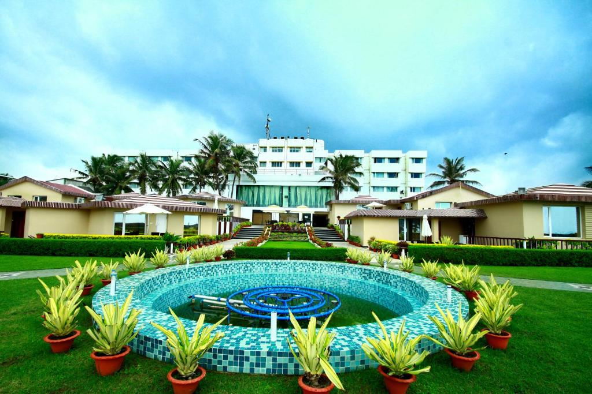
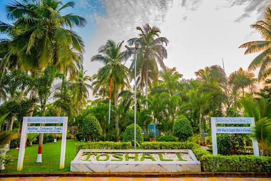
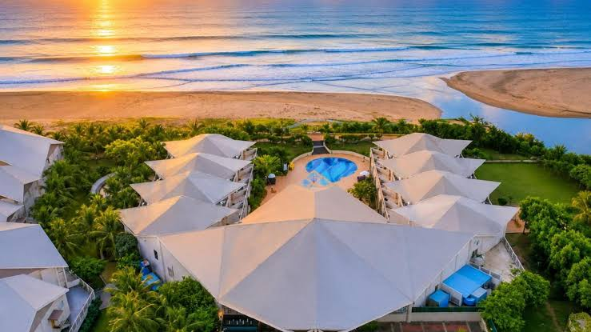
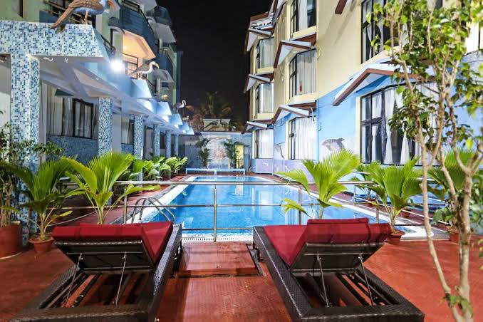

Stay & Hotels

Mayfair Heritage, Puri
- Upscale beachfront resort with heritage charm
- Direct access to Puri Beach
- Elegant rooms with sea views
- Renowned for excellent dining and service
- Premium pricing compared to local hotels
Hotel Holiday Resort, Puri
- Affordable comfort with modern amenities
- Spacious rooms and gardens
- Good value for money
- Close to beach and temple
- Not as luxurious as premium resorts


Toshali Sands Resort, Puri
- Nature escape with ethnic village theme
- Large property with greenery
- Unique ethnic-style cottages
- Good facilities for families
- Located slightly away from main beach
Sterling Puri
- Modern resort with beachside access
- Well-maintained property with pool
- Family-friendly activities
- Close to beach and attractions
- Can get crowded during peak season


Hotel Niladri, Puri
- Sea-facing hotel with budget options
- Great sea-facing rooms
- Budget-friendly rates
- Walking distance to Jagannath Temple
- Basic amenities compared to resorts